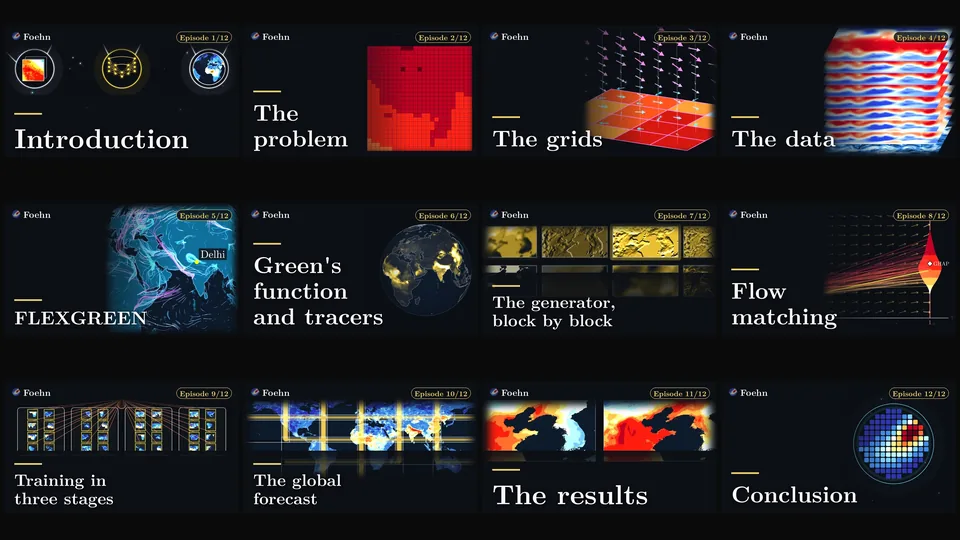
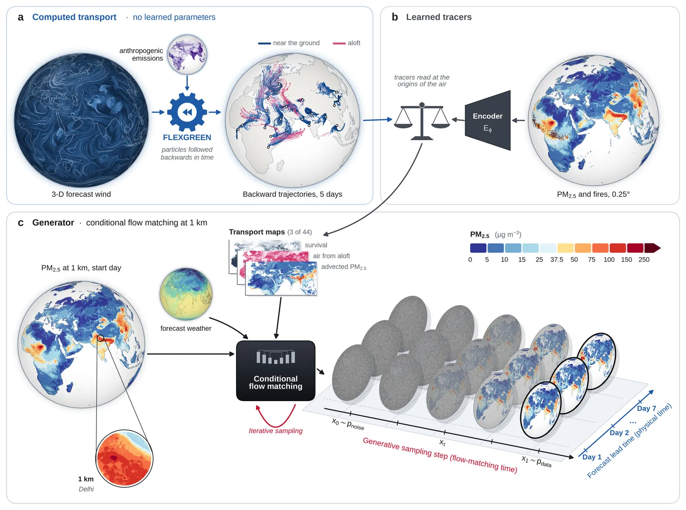
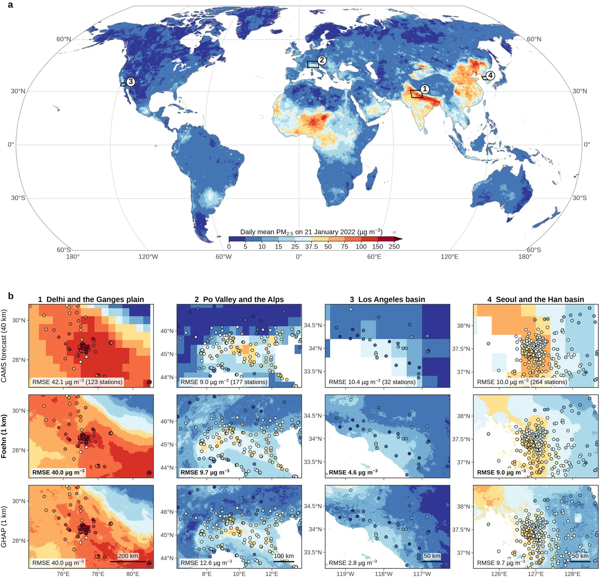
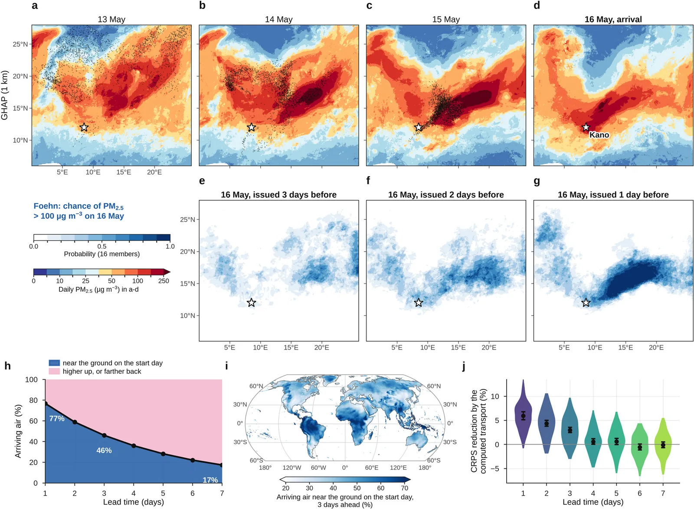
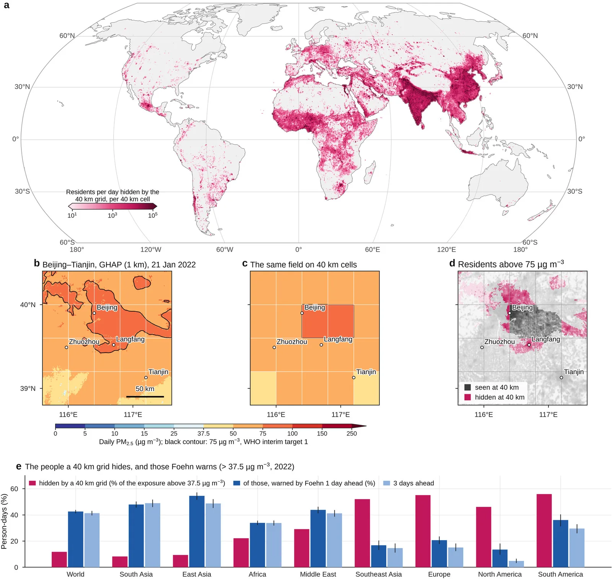
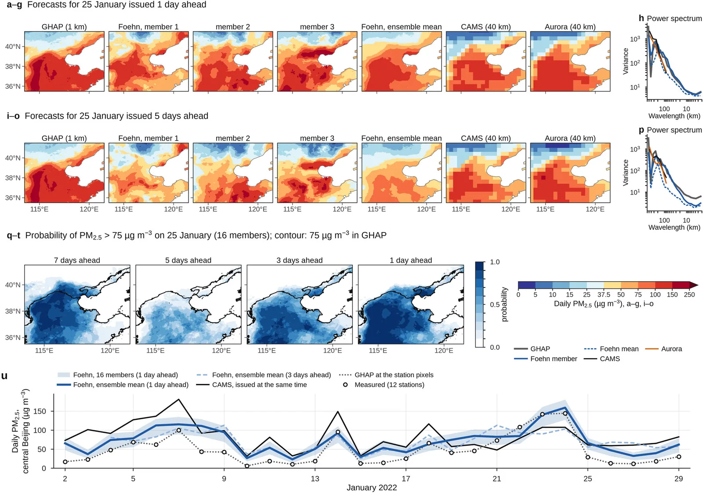

7:46
7:46
Foehn en 8 minutes
Des particules que vous respirez à une prévision à 1 km, partout sur Terre : l’air remonté dans le temps, le générateur, les résultats.

L’exposition à court terme aux particules fines (PM2.5) est responsable d’environ un million de décès par an. Les prévisions opérationnelles utilisent des mailles de plusieurs dizaines de kilomètres, qui masquent la pollution que respirent chaque jour près de deux cents millions de personnes. Foehn est un modèle génératif qui apprend à partir d’estimations mondiales des PM2.5 à l’échelle du kilomètre, et qui calcule d’où vient l’air : il prévoit les concentrations journalières de PM2.5 à 1 km sur toutes les terres habitées, jusqu’à une semaine à l’avance, sous la forme d’un ensemble calibré.
Foehn repose sur deux idées. FLEXGREEN suit l’air à rebours dans la prévision météorologique en trois dimensions et transforme les origines de cet air en cartes de transport, sans aucun paramètre appris. Un réseau entraîné par flow matching prévoit ensuite des fenêtres de la taille d’un continent en une seule passe, sans raccords entre tuiles, en générant des futurs possibles plutôt que leur moyenne floue.
Sur un an de prévisions rétrospectives (2022), évaluées sur des milliers de stations de mesure qui n’ont jamais servi à entraîner ni à sélectionner le modèle, Foehn a été, pour trois stations sur quatre, plus précis que la prévision opérationnelle émise au même moment, et sa moyenne d’ensemble a détecté les extrêmes locaux de pollution à quatre jours d’échéance aussi bien que la prévision opérationnelle à un jour. J’ai mené le développement de la méthode, les expériences et la rédaction ; la prépublication, cosignée avec Michael Boy et Zhi-Song Liu, est disponible sur arXiv (2610.25941).
1 km
Résolution
toutes les terres habitées
7 jours
À l’avance
ensembles calibrés
3 sur 4
Stations
où Foehn fait mieux que la prévision opérationnelle (prévisions rétrospectives, 2022)
−17 %
Erreur à J+1
par rapport à la prévision opérationnelle (6 324 stations)
7:46
Des particules que vous respirez à une prévision à 1 km, partout sur Terre : l’air remonté dans le temps, le générateur, les résultats.

Playlist · 12 épisodes + film completDouze épisodes animés et un film de 44 minutes expliquent Foehn bloc par bloc, du problème et des données jusqu’à FLEXGREEN, au générateur et aux résultats.

Architecture : transport calculé, traceurs appris, générateur
Quatre bassins pollués : comparaison avec la prévision opérationnelle et les estimations à 1 km
Où se trouvait l’air arrivant à Kano au cours des trois jours précédents
Les habitants qu’une prévision à 40 km ne peut pas alerter
L’épisode de pollution de janvier 2022 à Pékin, à un et cinq jours d’échéance Les fumées du 18 juillet 2022, prévues d’un à sept jours à l’avance
Les fumées du 18 juillet 2022, prévues d’un à sept jours à l’avance
Prépublication arXiv Site du projet et prévisions interactives Le film (8 min) Code sur GitHub